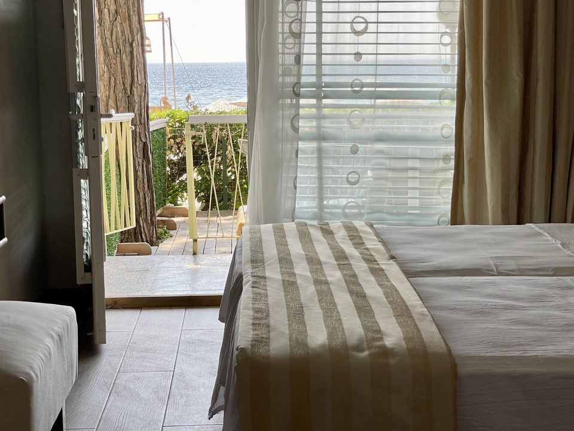
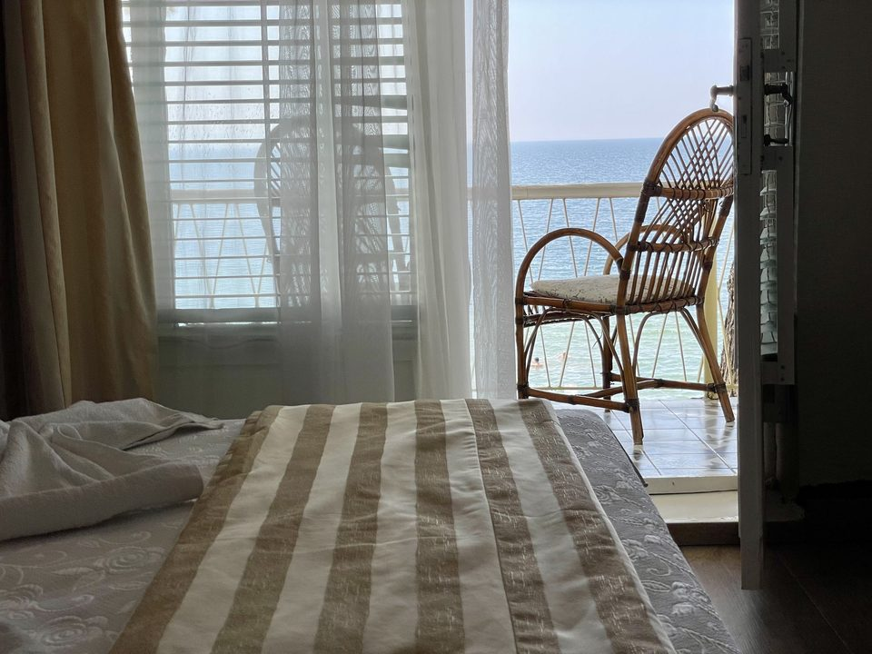
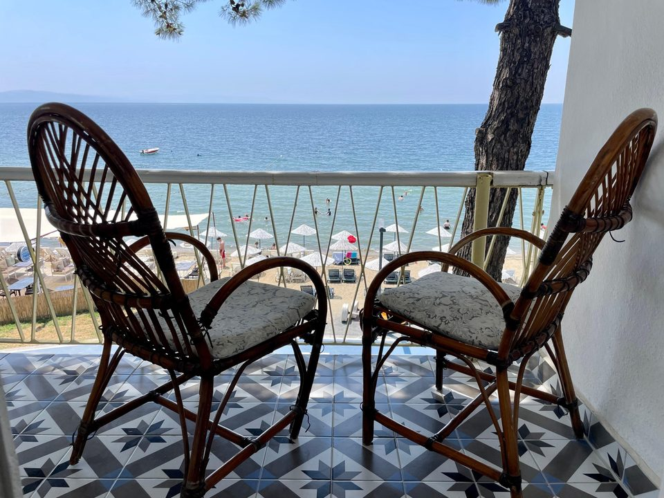
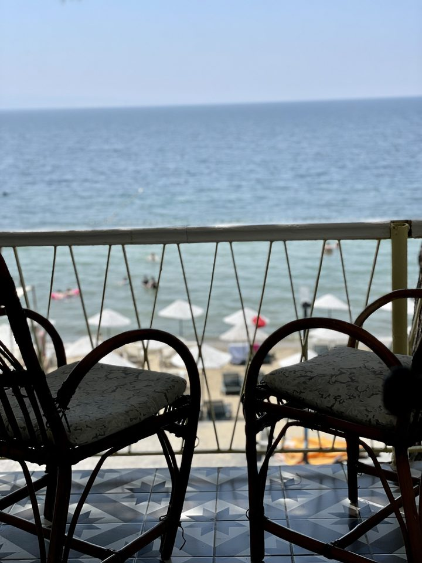
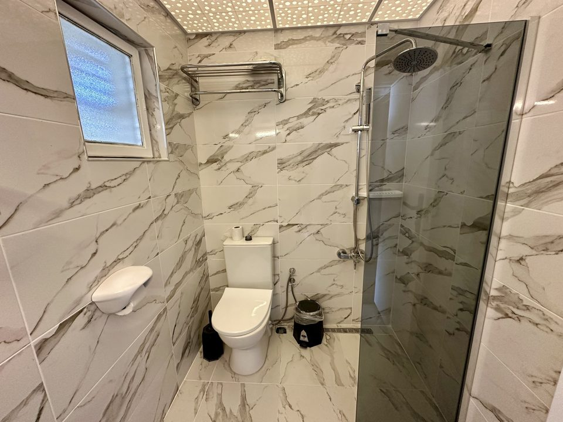
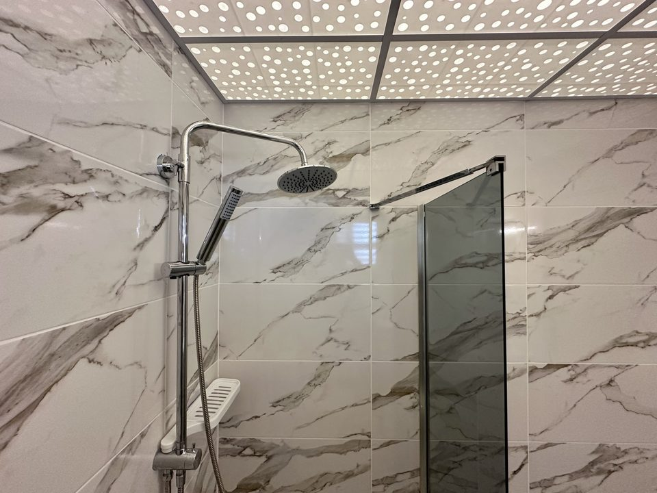
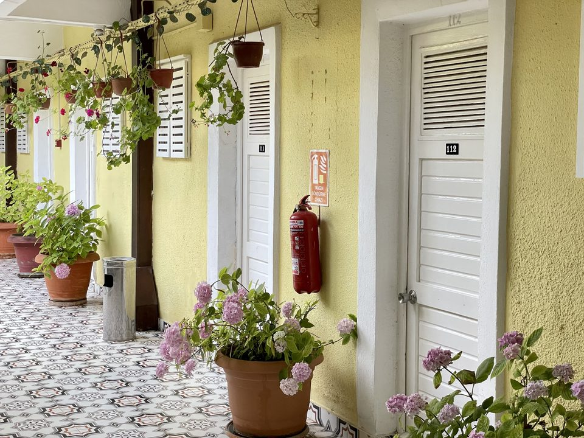
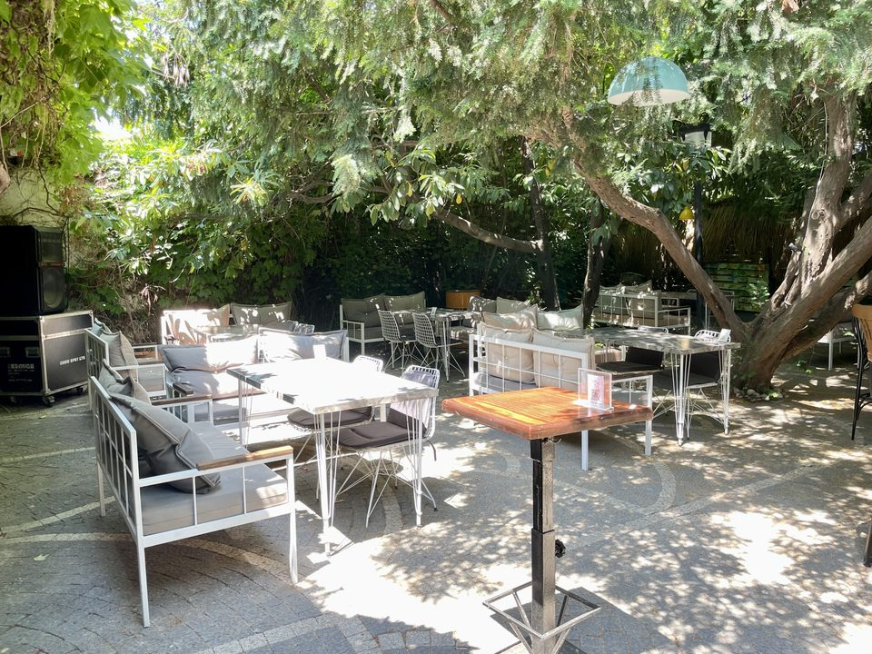
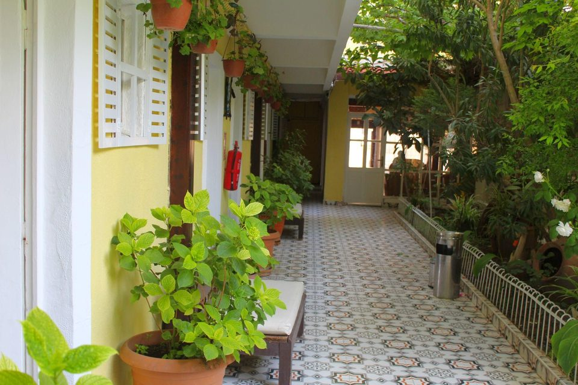

GÜLPLAJ HOTEL · 9 FOTOĞRAF
Odalar ve balkonlar

Çift Kişilik Oda
Çift kişilik yatak, televizyon ve balkon kapısı bulunan oda.
Tam boy görüntüle
Oda İçi
Çift kişilik yatak, televizyon ve dolap bulunan oda.
Tam boy görüntüle
Deniz Manzaralı Oda
Açık balkon kapısından deniz görünen oda.
Tam boy görüntüle
Oda Manzarası
Balkon kapısı ve deniz manzarası yönündeki oda görünümü.
Tam boy görüntüle
Yatak Alanı
Balkon ve deniz manzaralı yatak bölümü.
Tam boy görüntüle
Oda Detayı
Yatak üzerindeki havlular ve pencere önü.
Tam boy görüntüle
Deniz Manzaralı Balkon
Denize bakan balkonda iki hasır sandalye.
Tam boy görüntüle
Balkon Manzarası
Deniz manzaralı balkonda hasır sandalyeler.
Tam boy görüntüle
Balkon Oturma Alanı
Oda önünde sarı koltuk ve masa bulunan oturma alanı.
Tam boy görüntüleGÜLPLAJ HOTEL · 6 FOTOĞRAF
Banyolar

Banyo
Banyoda kapı, lavabo, ayna ve saç kurutma makinesi.
Tam boy görüntüle
Banyo Genel Görünüm
Lavabo, tuvalet ve duş kabininin geniş görünümü.
Tam boy görüntüle
Duş Alanı
Mermer desenli banyoda tuvalet ve cam duş bölümü.
Tam boy görüntüle
Duş Donanımı
Banyodaki yağmur duşu ve el duşu.
Tam boy görüntüle
Lavabo Alanı
Banyoda lavabo, ayna ve saç kurutma makinesi.
Tam boy görüntüle
Duş Kabini
Cam duş kabini ve mermer desenli duş duvarları.
Tam boy görüntüleGÜLPLAJ HOTEL · 14 FOTOĞRAF
Avlu ve ortak alanlar

Avlu
Saksı çiçekleriyle süslü oda önü koridoru.
Tam boy görüntüle
Açık Teras
Açık havada masalar ve sandalyeler bulunan teras.
Tam boy görüntüle
Bahçe Avlusu
Desenli zeminli avlu ve yeşil merdiven.
Tam boy görüntüle
Bahçede Oturma Alanı
Ağaçlar altında sarı koltuk ve küçük masa.
Tam boy görüntüle
Oda Önleri
Çiçekli saksılar arasında yan yana oda kapıları.
Tam boy görüntüle
Teras
Teras oturma alanından balkonlu otel cephesi.
Tam boy görüntüle
Restoran Terası
Denize bakan restoran terasında hazırlanmış masalar.
Tam boy görüntüle
Bahçe
Ağaç gölgesindeki bahçe masaları ve sandalyeleri.
Tam boy görüntüle
Deniz Manzarası
Otel terasından ağaçlar, plaj şemsiyeleri ve deniz görünümü.
Tam boy görüntüle
Restoran
Denize bakan üstü kapalı restoran terası.
Tam boy görüntüle
Deniz Kıyısında Sofralar
Deniz ve palmiye manzarası önünde hazırlanmış restoran masası.
Tam boy görüntüle
Bahçe Koridoru
Bitkiler ve odaların önünden geçen açık koridor.
Tam boy görüntüle
Resepsiyon
Ahşap resepsiyon bankosu ve lobi oturma alanı.
Tam boy görüntüle
Kafe Girişi
Kafe yazılarıyla renkli basamaklar ve merdiven.
Tam boy görüntüleGÜLPLAJ HOTEL · 7 FOTOĞRAF
Dış cephe ve sahil

Otel Tabelası
Sarmaşıklar arasındaki Hotel Gülplaj tabelası.
Tam boy görüntüle
Sahil
Deniz kıyısında şemsiyeler ve şezlonglar.
Tam boy görüntüle
Dış Cephe
Otelin balkonlu cephesi ve önündeki ağaçlar.
Tam boy görüntüle
Plaj
Deniz ve plajdaki hasır şemsiyeler.
Tam boy görüntüle
Otel Girişi
Türk bayrağı ve sarmaşıklarla otel giriş cephesi.
Tam boy görüntüle
Giriş Cephesi
Sarmaşıklarla kaplı Hotel Gülplaj tabelası ve otel girişi.
Tam boy görüntüle
Otel ve Kafe
Otelin ağaçlı ön cephesi ve kafe girişi.
Tam boy görüntüleFotoğraflardan oda seçimine
Bu sayfada otelin farklı oda ve ortak alan görünümleri bulunur. Her fotoğrafın başlığı ve kısa açıklaması, görüntüdeki alanı tanımanıza yardımcı olur. Aynı yatak düzeni, balkon veya manzara bütün odalarda bulunmayabilir.
Oda seçmeden önce tarihlerinize açık oda tipinin açıklamasını okuyun. Belirli bir manzara, kat veya yatak düzeni istiyorsanız tercihinizi rezervasyon öncesinde otelle teyit edin.
Sahil, avlu ve Erdek’te konum
Sahil ve dış cephe görselleri otelin çevresini, avlu ve ortak alan fotoğrafları ise konaklamanız sırasında karşılaşacağınız farklı alanları gösterir. Fotoğrafı tam boy açarak ayrıntıları daha yakından inceleyebilirsiniz.
Varışınızı planlamak için güncel adresi ve yol tarifi bağlantısını konum sayfasından açın. Konaklama kapsamındaki hizmetleri ve yemek paketini seçtiğiniz rezervasyon planıyla birlikte değerlendirin.